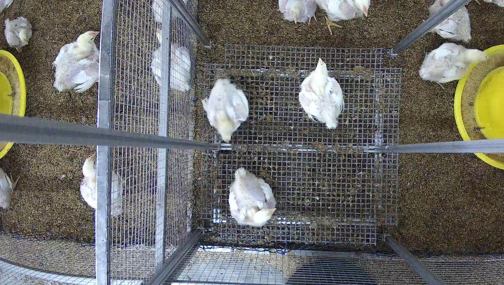
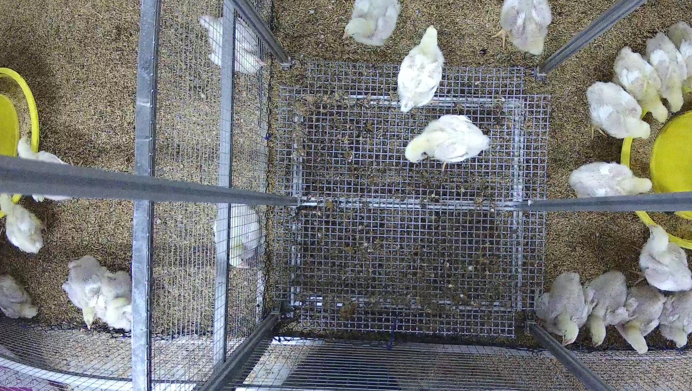

ปัญหาเริ่มจากหน้างาน ไม่ใช่จาก architecture
ฟาร์มไก่ขนาดใหญ่มีไก่หลายหมื่นตัวต่อโรงเรือน แต่การชั่งน้ำหนักยังพึ่งการสุ่มจับและแรงงานคนเป็นหลัก
- ต้องสุ่มจับไก่ขึ้นเครื่องชั่งทีละรอบ ไม่สามารถครอบคลุมทั้งฝูง
- ใช้แรงงานจำนวนมาก และเพิ่มความเครียดให้สัตว์
- มีโอกาสผิดพลาดจาก sampling bias และ human handling
- ผู้จัดการฟาร์มไม่เห็นการเติบโตแบบ real-time
- การตัดสินใจเรื่อง feed, flock health และ performance จึงช้ากว่าความจริงหน้างาน

Real barn image
Dense flock condition Real WeighVision setup
Real WeighVision setup
AI Model: จากภาพสู่ข้อมูลที่นำไปทำนายน้ำหนักได้
FarmIQ พัฒนา model อยู่ 2 ประเภทชัดเจน: object detection / segmentation model คือ YOLO26n-seg สำหรับแยกตัวไก่และสร้าง metadata ที่หน้างาน และ weight prediction model คือ baseline-v1 python-linear-regression สำหรับทำนายน้ำหนักจาก feature set ใน Cloud/Edge shadow path
รับภาพจากจุด capture หรือ frame ที่ใช้งานจริงในโรงเรือน
instance segmentation สำหรับแยก object และสร้าง mask ของไก่แบบ pixel-level ใน capture runtime
ดึง area, height, width, length, depth, confidence และบริบทการ capture ตาม feature schema v1
ใช้ feature set เหล่านี้ในการ estimate น้ำหนัก โดย runtime family ปัจจุบันคือ python-linear-regression และยังอยู่ใน shadow mode
ผลลัพธ์ไม่หายไปกับ model output แต่ผูกกับ session และ event pipeline ต่อได้
 Real capture UI + segmentation evidence
Real capture UI + segmentation evidence
IoT Layer และ Edge Runtime คือหัวใจของความเป็น platform
สถานะงานปัจจุบัน และหลักฐานว่ามีการทดลองจริง
Real IoT-layer experiment setup
segmentation runtime, benchmark, rollout/rollback, และ metadata traceability ครบแล้ว โดย active runtime อ่านจาก camera-config/model/best.pt
Cloud train/export/subscription path พร้อมแล้ว แต่ package wv-shadow-field-baseline-2026.07.14 ยังเป็น python-linear-regression ใน shadow mode และยังไม่พร้อม promote
7.49596 kg แย่กว่า naive comparator 2.647279 kgDemo script ที่ควรโชว์
Real capture UI → segmentation → metadata
เปิดภาพหรือ stream ที่สะท้อนสภาพจริงในโรงเรือนหรือจุดชั่ง
ให้ผู้ชมเห็นว่าโมเดลไม่ได้แค่ detect แต่สร้าง mask และ geometry metadata ได้
อธิบายว่า event ถูกผูกกับ session และวิ่งผ่าน edge-to-cloud pipeline อย่างไร
ปิดท้ายด้วย business view ว่าข้อมูลเข้าไปอยู่ในระบบปฏิบัติการฟาร์มแล้ว